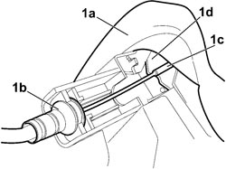

7005C39 TIE ROD CONNECTING INNER OPENING INTERMEDIATE CONTROL TO FRONT SIDE DOOR LOCK (ONE), LH OR RH - R R WITH INNER SUPPORT FRAME TAKEN OFF
- Path
- Procedures > 70 FITTINGS > 7005 PASSENGER COMPARTMENT FRONT SIDE DOORS > 7005C FRONT DOOR LOCK CONTROLS > 7005C39 TIE ROD CONNECTING INNER OPENING INTERMEDIATE CONTROL TO FRONT SIDE DOOR LOCK (ONE), LH OR RH - R R WITH INNER SUPPORT FRAME TAKEN OFF
- Kind
- repair procedure (removal / refitting; the operation number is the code)
- Applies to
- all engines; all production periods
- Interactive page
- https://sloeber94.github.io/elrnDB-fCrm/en/#/194000850
Applies to: all engines; all production periods
 Removing
Removing
 Refitting
RefittingOp. 7005C12 FRONT SIDE DOOR OUTER HANDLE, (ONE) LH OR RH - R R WITH INNER SUPPORT FRAME TAKEN OFF
1. Lift up the rubber protection (1a), release the end (1b) from the motor/lock assembly and disconnect the connecting rod (1c) from the lever (1d).

Applies to: all engines; all production periods
Refitting
Removing- Lift up the rubber protection.
- Connect the connecting rod and secure the end to the motor/lock assembly.
Op. 7005C12 FRONT SIDE DOOR OUTER HANDLE, (ONE) LH OR RH - R R WITH INNER SUPPORT FRAME TAKEN OFF